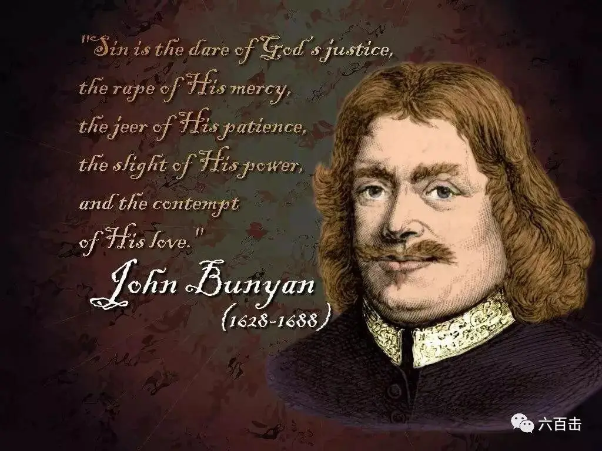
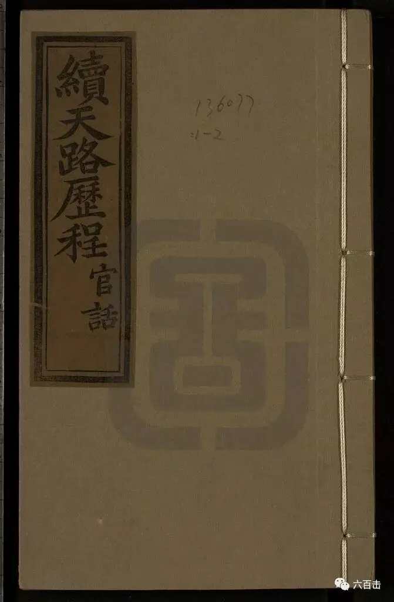
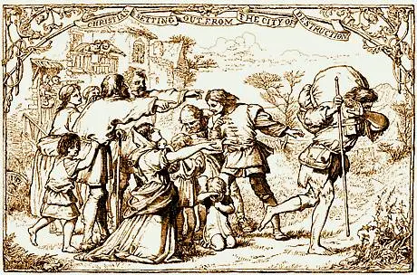
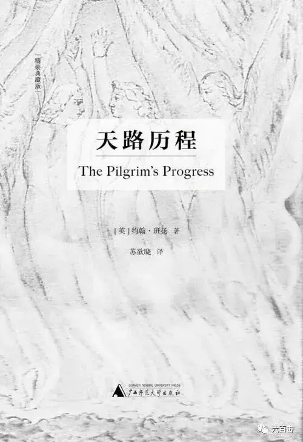
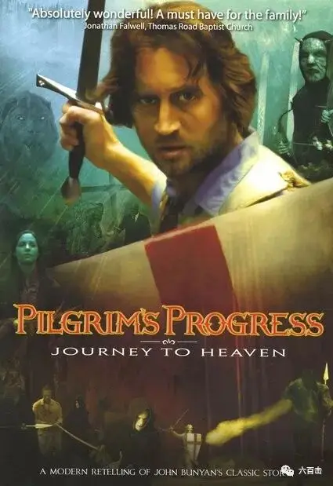

1620年，由于英国宗教迫害，一批清教徒乘坐五月花号逃往美国，长时间的颠簸后，有一半人死于严寒和疾病
后来美洲当地的印第安人教他们如何在新土地上播种粮食，帮助这群清教徒度过了难关
在当年的大丰收后，这群清教徒举行了为期三天的庆祝活动，并邀请帮助他们的印第安人一同参与，共同感谢上帝的预备和供给
于是，就有了今天的感恩节
这个节日与清教徒有着密切的关系，那么清教徒是一批什么样的人呢
今天就向大家推荐一部电影《天路历程》
这部电影的原著也是由17世纪的一个清教徒创作
他就是英国的约翰.班扬，因为“非法”传道，被捕入狱，在监狱中，他用12年的时间完成了著名的《天路历程》

这部长篇小说，是世界第二大畅销书，被誉为“具有永恒意义的百科全书”
是三大讽喻体作品，和斯宾塞的《仙后》、但丁的《神曲》齐名
同时它也是中国历史上出现的第一部西方长篇小说译著

小说有上下两卷，上卷中，讲述了一个梦境，在梦中，一个叫做“基督徒”的人通过读一本书，知道了自己所居住的城市要遭到毁灭，而唯一逃离的方法，就是离开这座城市，前往天堂之地
于是基督徒背负着重担，踏上了艰难的历程....在旅程中，他遇到了很多人，他们的名字很有趣：传道人、骄傲、无知、小信、希望、勇敢、世故、守律法先生.....，经过地方的名字也充满了寓意：毁灭之城、名利镇、窄路、道德村、西奈山、羞耻谷、怀疑城堡.....

这部寓言式的小说，以这样一种特别的形式，浓缩了清教徒一生的心路历程，信仰之旅又处处与《圣经》呼应，充满了反思和奔走天路的智慧和勇气，同时处处又闪现着恩典的记号
所以这样一部作品要改编成电影非常有难度，小说涉及大量的人物，整个旅程充满对话，很多思想的精髓都藏在对话之中

萧伯纳曾经称赞班扬的对话筒洁扼要，生动直率。
要将其中的韵味表现出来，对于编剧和演员的要求很高
还有小说中各种寓意性的场景，如何通过美术、布景以及特效实现效果，这不仅仅需要很高的技术和艺术水平，更需要大量的成本投入
所以在讲究成本和票房收入的电影工业体系中，大制作、大牌导演、一线明星都不会参与到《天路历程》的电影改编中
这个使命只能通过独立制作来完成，而这也注定了视听语言某种程度的“单薄”
说了这么多，就是想让习惯了大片的我们，降低对本片场景布置、视觉效果的预期，更多的关注内涵和表演
电影拍摄于2008年，创作班子都是基督徒，作家，制作人兼导演丹尼·卡拉莱斯将小说改编成现代版的《天路历程》

所以不管是服装还是场景上，更加贴近我们的生活，也更加能够引起我们的共鸣
来看一下主角基督徒，重担让他无法入睡
当传道人告诉他逃离毁灭的方法时，基督徒毅然奔向前路
对于基督徒来说，方向是确定的，就是去到山上的一个房间，去到那里他身上的重担将会被卸下，他也会得到救赎，那是一个完全喜乐的地方
但是前往的路上却有各种岔路口，看似通向天堂，却是走向地狱，比如说道德村和名利镇
而有些地方则充满了凶险，比如死亡之谷和魔法之地，它会让人沉睡，而一旦睡着，便再也无法醒过来，电影中用变形拉伸的镜头去表现这种眩晕
旅途中产生的固执、善变、怀疑、小信、世故都会阻碍基督徒走向天路，而这些抽象的东西在电影中都变成了有血有肉的人物
而这些麻烦都会让基督徒感到绝望和屈辱，这些处境在电影中也都被处理为具体的场景，比如说绝望泥潭和屈辱谷
这些具体的场景都让我们更加明白，如果我们不能够走出绝望和羞辱，我们便无法继续前进
当然，除了凶险，电影中有很多人都帮助了基督徒，比如说传道人、无畏、希望、光明使者
无畏因为坚持正义，在名利镇被法官判为死刑
更加有趣的是，基督徒在旅途中遇到的艰险，处处与圣经的教训呼应
当基督徒和希望被献媚者欺骗后，落入陷阱中的基督徒感慨
“现在我知道箴言的意思了，献媚邻舍的，就是设网络绊他的脚”
总体来说，电影的脉络处理的很清晰，基督徒的旅程是主线，中间有无畏和希望的生命见证
同时通过反面例子，让我们反思和警惕小信、形式主义、无知的危险
比如说无知， 他是个“轻快的年轻小伙”，（代表愚蠢和自负），通过自己的“歪路”要进入天国城。 对他来说，耶稣基督只是一个例子，而不是一个救主。 基督徒和希望试图纠正他，但是被他拒绝了
当他到达天国城门口时，他被要求提供入境所需的“证书”，这是他没有的。 国王听到这个消息，便命令将他绑在地狱里。
通过电影我们可以更加直观的知道基督徒要奔走的路是什么样的，他要征战的对象是什么，他的依靠是什么
电影对于小说的还原度很高，如果满分十分，这部电影可以打到七分，这还不是最好的改编，但是足以引起你对原著的兴趣和加深你对于原著的理解
电影资源很冷门，豆瓣上也只有两人评论，千辛万苦终于找到了资源，大家可以在后台回复：天路历程 获取电影资源
预告片（来源于youtube）
关注并在后台回复： 天路历程 获取电影资源
相关阅读：
得州 | 我回来就是让你承诺：不再哭泣，不再悲伤
邪恶有时候会被合理化，甚至科学化
请收藏转发 | “宗教改革”电影大全，一同纪念500年前的今天（内有资源）
不刷这篇影评，你看不懂《银翼杀手2049》
《乡愁》 | 没有一个人能够将信仰拍的如此诗意和凝重
一个唯科学主义者的悲剧
这里没有挑逗你眼目情欲的小鲜肉
也没有挑动你肉体情欲的段子
更没有膨胀你今生骄傲的鸡血
我们只在乎那些最质朴真诚的作品
在那里我们才能恢复真正的想象力
我们也坚信这才是我们真正需要的

ID:Six_hundred_hits
长按二维码，一键关注
【六百击】
-END-
电影评论
尽情分享朋友圈

苹果打赏通道